Administración cuida el dinero de la empresa: hace las compras a los proveedores, paga lo que se debe, cobra a los clientes, lleva la caja chica y entrega los préstamos. También mantiene al día los precios (con la aprobación de Gerencia), los proveedores y los vehículos.
Administración no recibe la mercancía (eso lo hace Producción) y no cambia las reglas de pago ni los bonos (eso lo hace Gerencia). Lo que no puede cambiar, lo pide con «Pedir autorización».
Mi día en 5 pasos
Entra al sistema y elige Administración.
Empieza por el Resumen: mira lo pendiente.
Haz las compras que hagan falta con Nueva compra.
Cobra lo que deben los clientes con Cobranza y paga a los proveedores en Por pagar.
Anota los gastos de caja chica y, al cierre, cuenta la caja con Arqueo.
Cómo entro y elijo mi puesto
Abre el sistema.
Pulsa el botón Administración.
Se abre el Resumen.
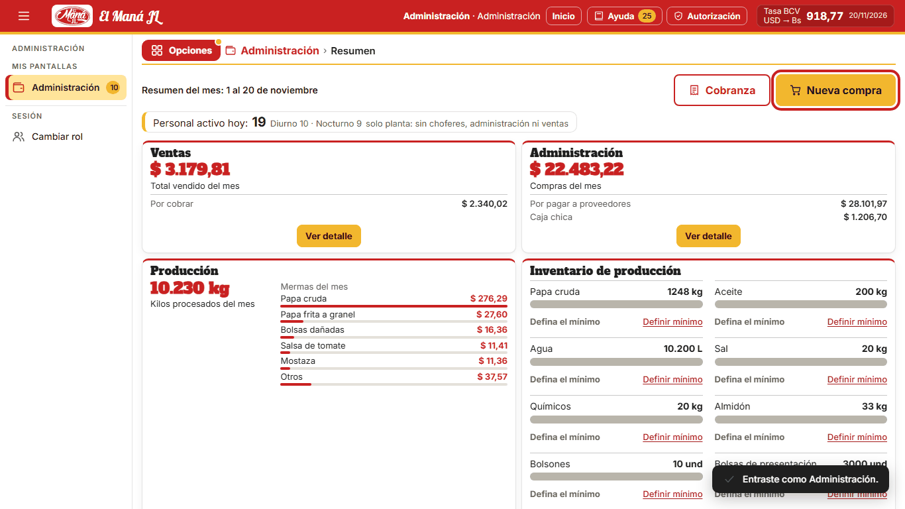
Resumen de Administración
Arriba del Resumen están los botones Cobranza y Nueva compra.
Cómo hago una compra
En el Resumen, pulsa Nueva compra (o pulsa Opciones, elige Compras y abre Hacer compra).
En Proveedor, toca al proveedor (o pulsa Nuevo proveedor).
En Productos, pon la cantidad de cada producto con + y −.
Escribe el número de la factura del proveedor.
Escribe la fecha de la factura.
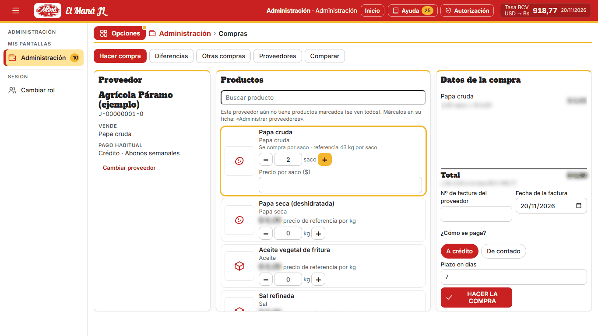
Compra con proveedor y productos
En ¿Cómo se paga? elige el banco o la cuenta y el plazo en días.
Pulsa HACER LA COMPRA.
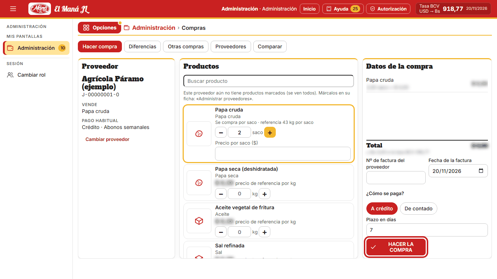
Cómo se paga y botón HACER LA COMPRA
La compra se hace en un solo paso: no hay que validarla después. Producción la ve en Pedidas por recibir y, cuando la recibe, queda lista. También se compran los Bolsones y las Bolsas de presentación.
Cómo veo las diferencias de compras
Pulsa Opciones y elige Compras.
Abre la pestaña Diferencias.
Lee cada compra que llegó distinta a lo pedido y el motivo que escribió Producción.
Úsalo para reclamar al proveedor.
Marca cada una como vista.
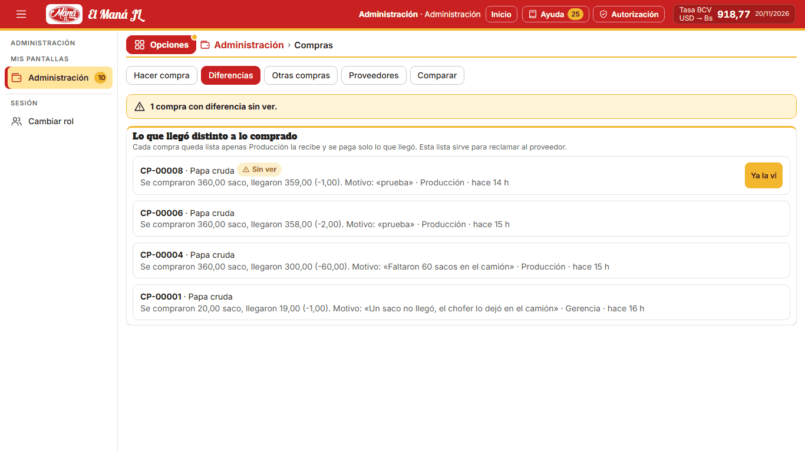
Diferencias de compras
Solo se paga lo que llegó.
Cómo anoto otras compras
Pulsa Opciones y elige Compras.
Abre la pestaña Otras compras.
Escribe qué se compró.
Elige el proveedor.
Escribe el monto y elige la partida contable.
Escribe el Motivo de la compra (es obligatorio).
Pulsa Registrar compra.
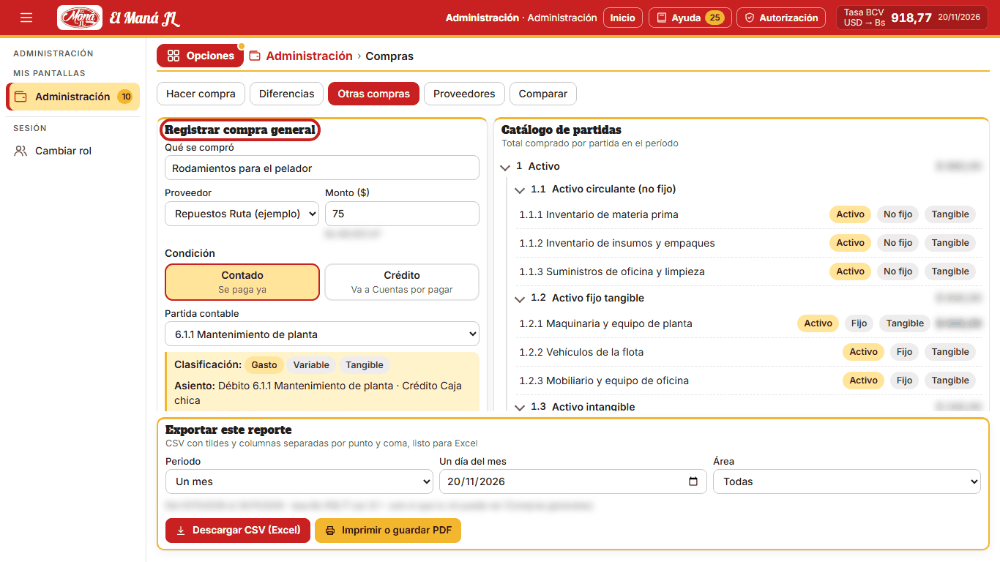
Otras compras
Cómo pago a un proveedor
Pulsa Opciones y elige Pagos y caja.
Abre la pestaña Por pagar.
Busca la compra del proveedor.
Pulsa Registrar pago (o Registrar abono si pagas una parte).
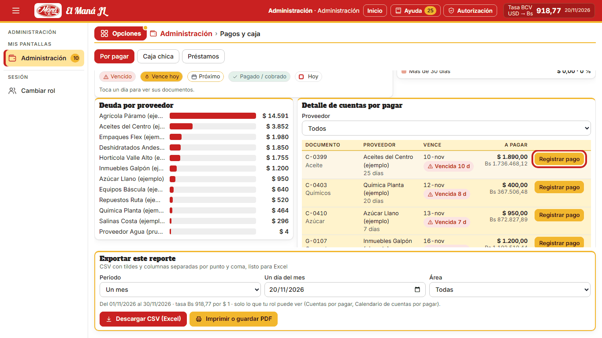
Por pagar
Cómo cobro a un cliente
En el Resumen, pulsa Cobranza (o pulsa Opciones, elige Cobranza y abre Registrar cobro).
Paso 1: elige al cliente.
Paso 2: marca las notas y facturas que paga (o pulsa Repartir el pago (más antigua primero)).
Paso 3: escribe la fecha, el monto recibido (Bs), el banco y el número de referencia.
Pulsa Registrar pago.
Pulsa Confirmar.
Si quieres el comprobante, pulsa Ver e imprimir el recibo.
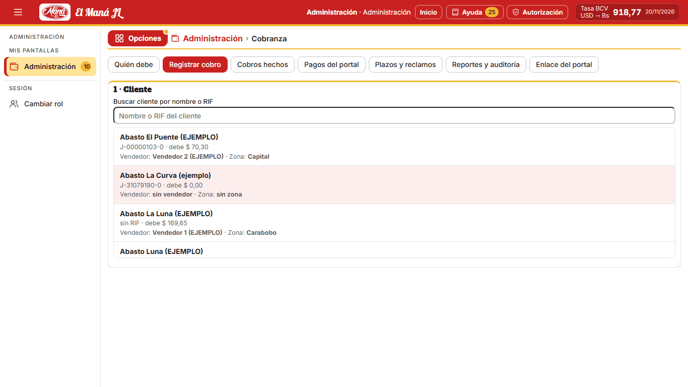
Registrar cobro
Para ver a quién cobrar
Pulsa Opciones y elige Cobranza.
Abre la pestaña Quién debe.
Pulsa WhatsApp, Llamar o Registrar cobro en la fila del cliente.
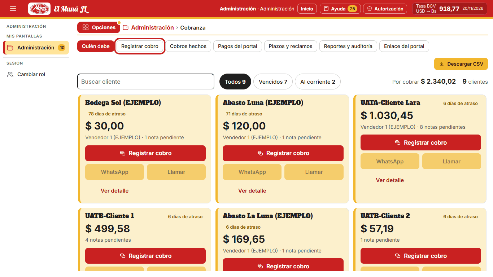
Quién debe
Para revisar los pagos del portal del cliente
Pulsa Opciones y elige Cobranza.
Abre la pestaña Pagos del portal.
En cada pago pulsa Confirmar y aplicar o Rechazar.
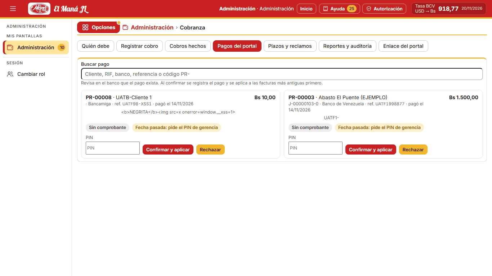
Pagos del portal
Si la fecha del pago es anterior, el sistema pide el PIN de gerencia.
Cómo anoto un gasto de caja chica
Pulsa Opciones y elige Pagos y caja.
Abre la pestaña Caja chica.
Baja hasta Registrar gasto.
Llena número, fecha, proveedor, RIF, monto, categoría y justificación.
Sube la foto del comprobante.
Pulsa Guardar.
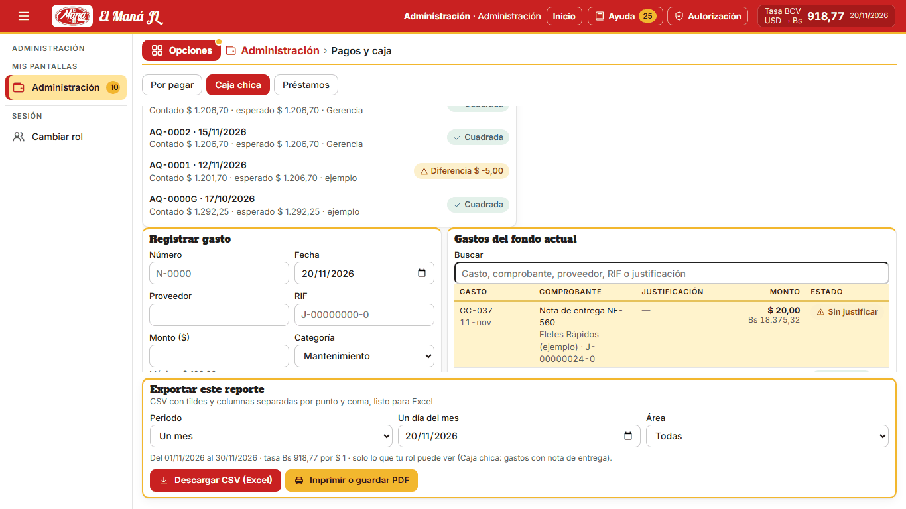
Registrar gasto de caja chica
Para contar la caja
En Caja chica, mira la tarjeta Arqueo.
Escribe el Efectivo contado ahora ($).
Pulsa Guardar arqueo.
Cómo entrego un préstamo
Pulsa Opciones y elige Pagos y caja.
Abre la pestaña Préstamos.
Elige al empleado.
Escribe monto, cuotas, fecha de entrega y motivo.
Pulsa Entregar préstamo y generar recibo.
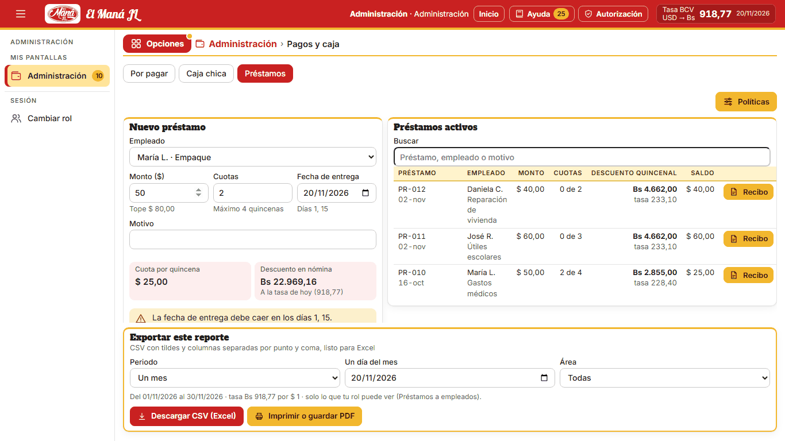
Préstamos
La cuota se puede descontar después al pagar la nómina (lo hace Recursos humanos).
Cómo pongo un precio
Pulsa Opciones y elige Precios.
Abre la pestaña Por lista.
Elige Minorista, Mayorista o Gran Mayor.
Toca el precio que quieres cambiar.
Si no hay precio, pulsa Cargar precios y escribe el de contado y el de crédito.
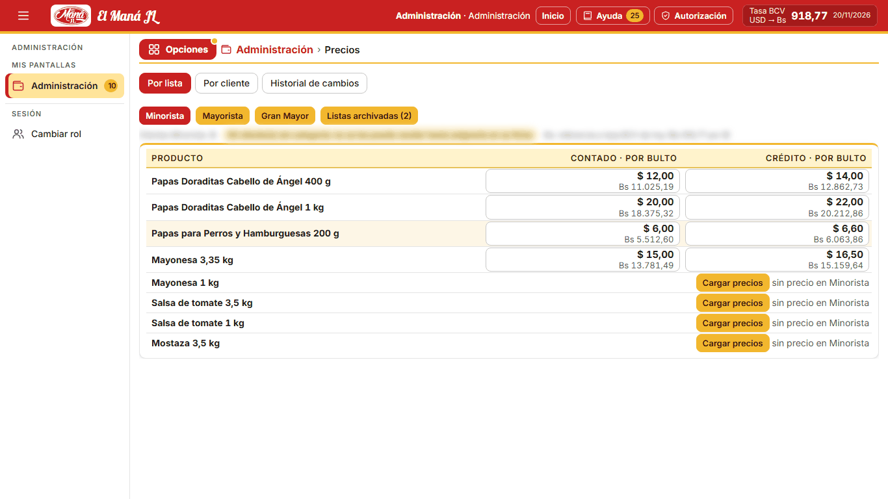
Precios por categoría
Tu cambio se envía a Gerencia para que lo apruebe. Puedes ver cómo va en Historial de cambios.
Cómo veo y defino el inventario mínimo
En el Resumen, mira la tarjeta Inventario de producción.
Cada insumo tiene una barra: verde si alcanza, amarillo si se acerca al mínimo, rojo si está en el mínimo o por debajo.
Pulsa Definir mínimo (o Cambiar mínimo) y escribe cuánto es lo mínimo.
Debajo de las barras, pulsa Cargar para anotar los Kilos de papa por bolsón.
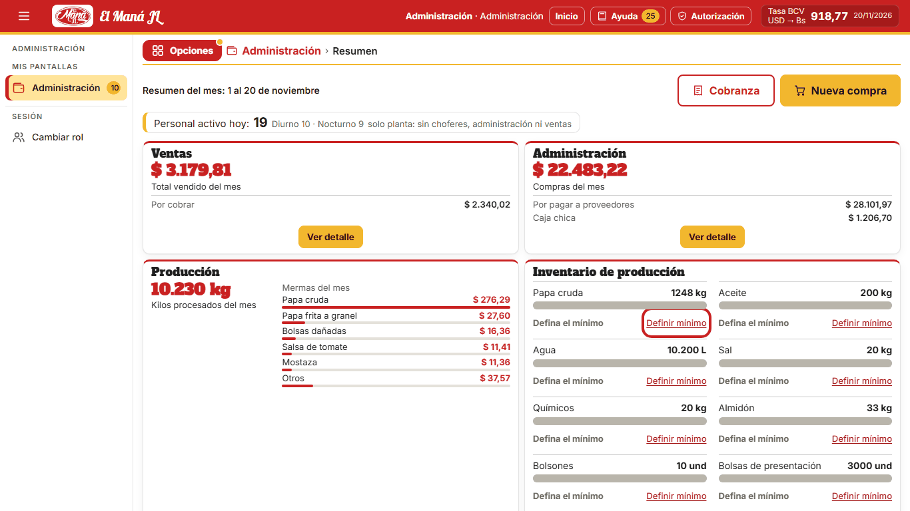
Inventario de producción con barras
Cómo registro a proveedores y vehículos
Un proveedor
Pulsa Opciones y elige Compras.
Abre la pestaña Proveedores.
Pulsa Nuevo proveedor.
Escribe nombre, RIF, qué vende y condición de pago.
Pulsa Guardar.
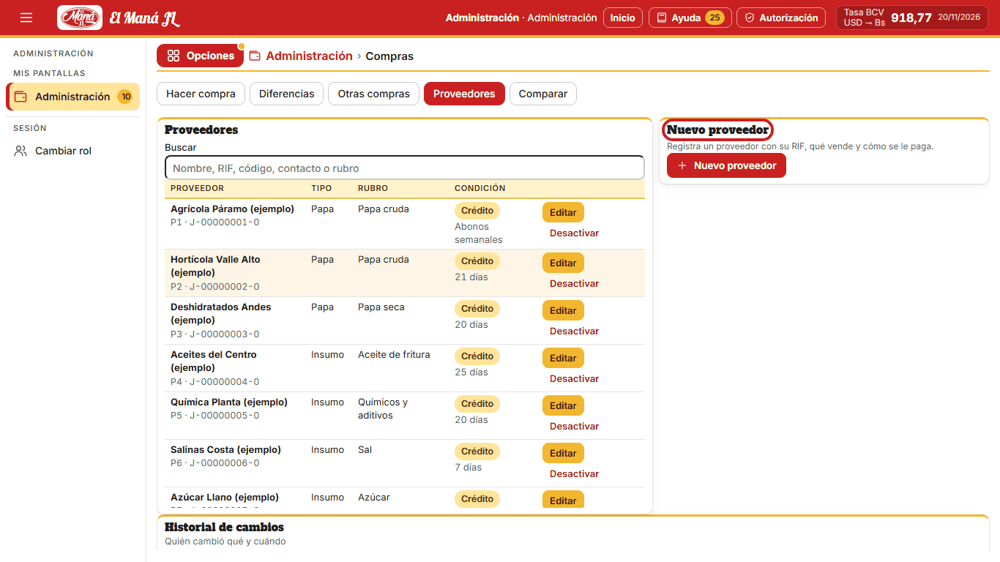
Proveedores
Un vehículo
Pulsa Opciones y elige Flota.
Pulsa Agregar vehículo.
Escribe placa, tipo, marca, modelo, capacidades, estado, chofer habitual y cuándo vencen el seguro y los documentos.
Pulsa Guardar.
Cómo veo los reportes, los bonos y las reglas
Pulsa Opciones y elige Registro de ventas para ver los Reportes de ventas.
Pulsa Opciones y elige Bonos para ver Turno en vivo y las metas.
Para las reglas de caja, entra en Pagos y caja y pulsa Políticas (arriba a la derecha).
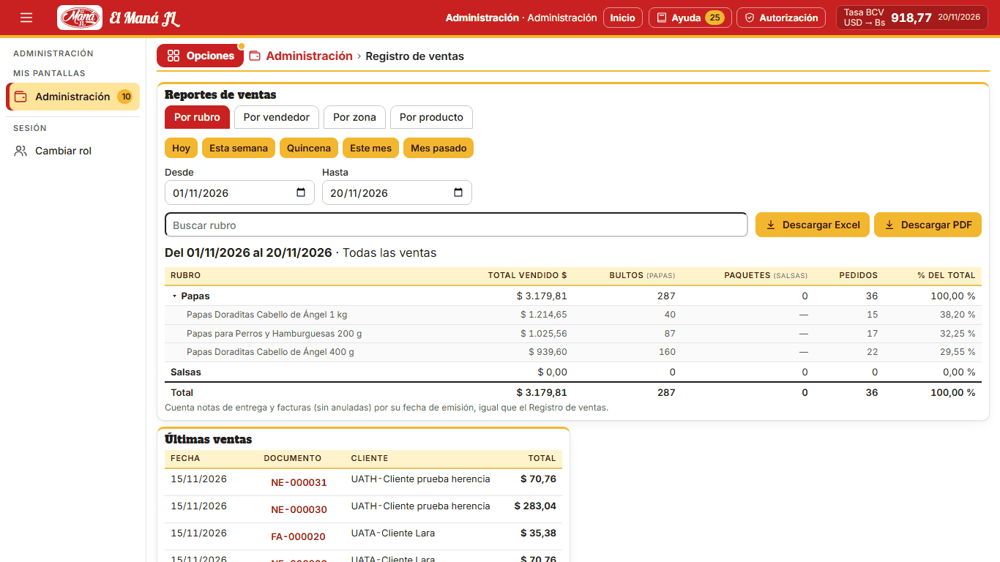
Reportes de ventas
Los parámetros de turnos y bonos solo los cambia Gerencia. Si hace falta un cambio, pulsa Pedir autorización.
Si algo sale mal
«Referencia repetida: no se guardó» al cobrar
Pulsa Ver el pago existente.
Revisa si ese pago ya estaba anotado.
Solo si no estaba, cámbiala y vuelve a intentar.
Un pago con fecha pasada pide el PIN de gerencia. Pídelo a Gerencia.
No puedo cambiar algo (por ejemplo un parámetro o una regla)